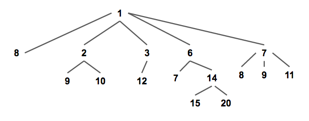

Projects
C# Projects
A priority queue is a type of queue that arranges elements based on their priority values. Elements with higher priority values are typically retrieved before elements with lower priority values.
Time Complexity Overview
| n | Total number of elements in the heap |
|---|
| Operation | Pairing Heap | D-ary Heap |
|---|---|---|
|
Count
Returns the number of elements in the heap
|
\(Θ\)(1) | \(Θ\)(1) |
|
Peek
Returns the smallest element in a Min-Heap or the largest element in a Max-Heap
|
\(Θ\)(1) | \(Θ\)(1) |
|
IsEmpty
Returns whether the heap is empty or not
|
\(Θ\)(1) | \(Θ\)(1) |
|
Insert
Inserts and element into the heap
|
\(Θ\)(1) | \(Θ\)(\(log_d\)n) |
|
Extract Min
Removes and returns the smallest element in a Min-Heap or the largest element in a Max-Heap
|
\(O\)(n)0 \(O\)(\(log\)n)1 |
\(Θ\)(\(dlog_d\)n) |
|
Contains
Returns whether the heap contains an element or not
|
\(Θ\)(1) | \(Θ\)(1) |
|
Update
Updates an element in the heap
|
\(O\)(1)0 \(o\)(\(log\)n)1 2 |
\(Θ\)(\(log_d\)n) |
|
Meld
Melds two heaps into one heap
|
\(Θ\)(1) | Nil |
0: Actual Time
1: Amortized Time
2: Lower bound of \(Ω\)(\(loglog\)n). Upper bound \(O\)(\(2^{2\sqrt{loglog n}}\))
D-ary Heap
A generalization of the binary heap in which the nodes have d children instead of 2.
"This data structure allows decrease priority operations to be performed more quickly than binary heaps, at the expense of slower delete minimum operations. This tradeoff leads to better running times for algorithms such as Dijkstra's algorithm in which decrease priority operations are more common than delete min operations. Additionally, d-ary heaps have better memory cache behavior than binary heaps, allowing them to run more quickly in practice despite having a theoretically larger worst-case running time. Like binary heaps, d-ary heaps are an in-place data structure that uses no additional storage beyond that needed to store the array of items in the heap." ~ Wikipidea
D-ary Heap
Example Usage
Pairing Heap
Pairing heaps are heap-ordered multiway tree structures, and can be considered simplified Fibonacci heaps. Pairing heaps are a type of self-adjusting binomial heap. Self-adjusting structures rearrange themselves when operations happen to remain balanced.
Pairing heaps maintain a min-heap property that all parent nodes always have a smaller value than their children (and maintains the max-heap property if the pairing heap is a max heap).
Each node keeps track of the following information: a pointer to its leftmost child node and pointers to its sibling nodes. The pointers in the pairing heap shown above look like this.
Pairing Heap
Example Usage
Unity Projects